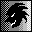

とつげき東北ｼｽﾃﾏﾃｨｯｸ麻雀研究所


このページで研究され得られたデータの一部は、雑誌「近代麻雀」の連載記事に有償で提供されました。BGM
★非麻雀関係： 雑記毒と笑いととつげき東北 

ギャグエッセイなんでやねん 思想＆毒舌研究嫌し系 実力ランキング1000試合以上限定版
★★告知★★
来年、とつげき東北の麻雀理論・麻雀講座が本になります（講談社現代新書！）。
基本はこのＨＰをベースにしつつ、各種データと研究を大幅に付け加える予定です。
研究材料やデータ、論じて欲しいこと、麻雀に関する疑問、自分の主張などありましたら何でも、掲示板にお寄せください。
みんなの発言やアイデア、議論を積極的に本の内容に取り入れていきたいと考えています。
「敵」として議論を吹っかけてくれるのも大歓迎だし、何か議題についてみんなで討論するのもいいね。
麻雀について誰がどんなことを考え、皆が、私がどう思っているのか、そうした意見交換ができると幸いです。
内容が良ければ、それ専用の章を作るかもしれません（詳細未定、なお上記予定は変更されることもあります）。
素晴らしい着想があれば「謝辞」に名前が出るカモ出ないカモ。
みんなで一緒に面白い麻雀本を作りましょう！（でも印税はおれが！←）
うしうし掲示板 →掲示板利用許諾（掲示板利用者必読） 何切る掲示板
また主として他家データ集計を目的として、超ラン・上ラン・ラン卓の牌譜を募集（第一第二共に）しています。
1000試合以上でなるべく多数試合のものを、MSNメッセンジャーやwebスペースへのアップロードでやりとりできる方はご連絡下さい。
なおHNや別HN、接続日時、個人の成績等については問いませんし、それらの情報が漏れる形で他人に伝えることもありません。
★プログラミング関係・公開ソフトウェア：
プログラミング関係リンク・C/C++/API微妙Ｔｉｐｓ 「完全にランダムな乱数」発生ルーチンhdrand.c 暗号ソフトをデザインしてみる
 VNCrypt3.65（LZH圧縮解凍機能付・高強度暗号化/復号化ツール） 最高賞金12万円解読コンテスト
VNCrypt3.65（LZH圧縮解凍機能付・高強度暗号化/復号化ツール） 最高賞金12万円解読コンテスト
 VNCrypt.DLL3.10（VNC暗号ファイル・LZH圧縮ファイルを作成/展開するためのDLL）
VNCrypt.DLL3.10（VNC暗号ファイル・LZH圧縮ファイルを作成/展開するためのDLL）
WinPTA2.10（WINDOWSの影でキーボード入力等を監視し記録する管理・保守ツール）
 FileSHA1.00（ファイルからSHA-1およびSHA-512ハッシュ値を計算するソフト）
FileSHA1.00（ファイルからSHA-1およびSHA-512ハッシュ値を計算するソフト）
 Fat.exe1.00（exeファイルに冗長データを加える簡易偽装ツール）
Fat.exe1.00（exeファイルに冗長データを加える簡易偽装ツール）
 高橋名人4.70（連射キー・トリガキー割り当て自在の超高速連打ツール）
高橋名人4.70（連射キー・トリガキー割り当て自在の超高速連打ツール）
 できすぎくん4.72（東風成績集計ツール）
できすぎくん4.72（東風成績集計ツール）
 ツモツモ君♪3.7（東風・リーチ時自動和了・ツモ切りツール）
ツモツモ君♪3.7（東風・リーチ時自動和了・ツモ切りツール）
 MJexeIO.DLL0.90（東風荘画面入出力DLL）
MJexeIO.DLL0.90（東風荘画面入出力DLL）
MJSIM02.00（麻雀研究用シミュレータ）
東風用ボイス
その他のクズプログラムたち
★麻雀関係研究（メイン）：
システマティック麻雀工学07/13
最強水準になるための最新技術麻雀講座
とつ成績 とつ牌譜ＤＬ ヤクマン画像 クソ画像
仲間でワイワイ掲示板 アンチシスマ共同・何切る掲示板
みんなで参加しよう！ 何切る掲示板は ↑↑↑ あなたのＨＰトップから無断直リンｏｋです！
★麻雀関係研究（その他）：
旧麻雀講座 初〜中級者向け（内容は古い）
牌譜公開 シスマ内外★実力ランキングCGI版（1000試合以下可能版）
論文等
システマティック麻雀公式集 安定Ｒ・保障安定Ｒって何ですか？
平均順位の偏りと信頼できる実力評価
諸君の「読み」がヘタクソな理由
「和了放銃方程式の定式化」
「順位麻雀とトップ麻雀との実力の比較に関して」
「麻雀の成績比較の方法論」
「Ｒ2000のドヘタ」
「みかけＲ・最高Ｒ・安定Ｒの、実力計測精度の比較」
「流れが存在しないことの証明」
「東風荘のツモは予測できるか」
★★★★
★リンク： ＬＩＮＫ
←お気軽にメールください（いたずら等やめてね）。